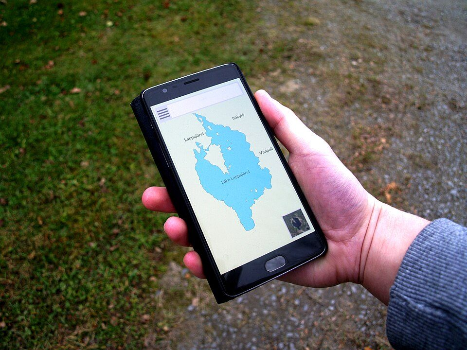
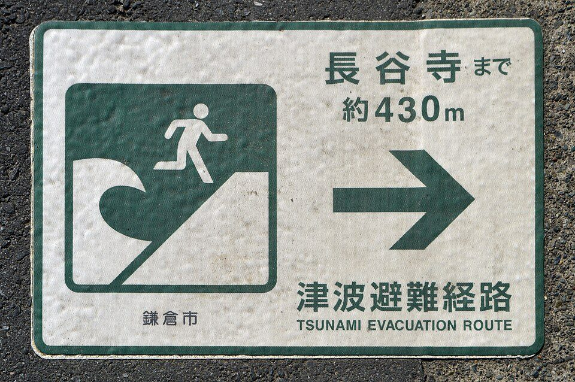

国や公的機関の無料ウェブツール：防災・地図・税・年金・調べものに使える23選と、偽サイトの見分け方
要点まとめ
国や公的機関は、災害のリスクを調べる地図、年金や積立の試算、法令や論文の検索など、ブラウザで使えるウェブツールを数多く公開しています。この記事では、暮らしや仕事・学びに役立つ23件を選び、用途別に、提供元・できること・登録の要否で整理しました。選んだのは、国の機関や独立行政法人などの公的機関が運営し、パソコンやスマホのブラウザで使えるものです。あわせて、2024〜2026年に始まった・変わったことと、公的機関を装った偽メール・偽サイトの見分け方もまとめました。パソコンに入れて使うソフトは、定番ソフトのまとめとオープンソースのソフトの記事で紹介しています。

用途別の一覧と、使う前に確かめる点
まず全体を一覧にします。ツール名の横の番号は、公式のページ（本体の画面を読めなかったものは、運営元の説明のページ）への出典です。
| 用途 | ツール名 | 提供元 | できること | 登録 |
|---|---|---|---|---|
| 防災 | 重ねるハザードマップ[9] | 国土交通省・国土地理院 | 住所から洪水・土砂災害・高潮・津波のリスクを地図で見る | 不要 |
| 防災 | キキクル[10] | 気象庁 | 大雨による災害の危険度を5段階の色で見る | 不要 |
| 防災 | J-SHIS 地震ハザードステーション[11] | 防災科学技術研究所 | 強い揺れに見舞われる確率などの地図を見る | 不要 |
| 地図 | 地理院地図[12] | 国土地理院 | 地形図・空中写真・標高を見る、断面図を作る | 不要 |
| 住まい | 不動産情報ライブラリ[13] | 国土交通省 | 取引価格・地価・防災・都市計画の情報を地図で見る | 不要（APIは申請） |
| 税 | 確定申告書等作成コーナー[14] | 国税庁 | 確定申告書を作り、e-Taxで送る | e-Taxの本人確認が必要（初めての人はマイナンバーカード方式） |
| 年金 | ねんきんネット[2] | 日本年金機構 | 年金記録・見込額・電子版ねんきん定期便を見る | 要（マイナポータル連携かユーザID） |
| 年金 | 公的年金シミュレーター[15] | 厚生労働省 | 働き方による将来の年金額を試算する | 不要（明記） |
| 資産形成 | 資産運用シミュレーション[16] | 金融庁 | 積立額・利回り・期間から将来の額を計算する | 不要 |
| 医療 | 医療情報ネット（ナビイ）[17] | 厚生労働省 | 全国の病院・診療所・薬局などを探す | 不要 |
| 介護 | 介護サービス情報公表システム[18] | 厚生労働省 | 介護事業所を探して比べる、概算料金を試算する | 不要 |
| 仕事 | ハローワークインターネットサービス[19] | 厚生労働省 | 求人を探す | 検索は不要（マイページは登録した人向け） |
| 仕事 | 職業情報提供サイト（job tag）[20] | 厚生労働省 | 職業の情報を調べる、自己診断で適職を探す | 不要 |
| 暮らし | リコール情報サイト[21] | 消費者庁 | 製品の回収・無償修理の情報を見る | 不要 |
| 法令 | e-Gov法令検索[22] | デジタル庁 | 法令を検索する（廃止・未施行の法令も） | 不要 |
| 統計 | e-Stat・jSTAT MAP[23] | 総務省統計局・統計センター | 国の統計を探す、地図で見る | 不要（保存などはログイン） |
| 地域 | RESAS（リーサス）[24] | 経済産業省・内閣官房 | 地域経済のデータを地図・グラフで見る | 不要（明記） |
| 本・資料 | 個人向けデジタル化資料送信サービス[25] | 国立国会図書館 | 絶版などの資料を自宅で読む | 要（本登録・本人確認書類、国内に住む人） |
| 文化 | ジャパンサーチ[26] | 国立国会図書館が運用 | 本・公文書・美術・放送番組などを横断して検索する | 不要 |
| 特許 | J-PlatPat[27] | 工業所有権情報・研修館（INPIT） | 特許・実用新案・意匠・商標の公報を検索する | 不要 |
| 論文 | CiNii Research[28] | 国立情報学研究所 | 論文・データ、大学図書館の本を探す | 不要 |
| 論文 | J-STAGE[29] | 科学技術振興機構（JST） | 日本の学術論文を読む | 不要 |
| 翻訳 | みんなの自動翻訳＠TexTra[3] | 情報通信研究機構（NICT） | 文章を翻訳する（非商用のみ） | 要（ユーザー登録） |
登録の欄の「不要」は、調査日に、登録の画面を通らずに検索や試算を始められたものです。「不要」を公式に明記しているのは、公的年金シミュレーター[1]とRESAS[24]です。料金は、RESAS・J-PlatPat・TexTraが無料と明記し[24][27][3]、J-STAGEは9割以上の記事が無料です[29]。ほかのツールも、今回調べた範囲では利用料の案内はありませんでした。各ツールの「向く人」は、できることをもとに筆者が考えた例です。
使う前に確かめたい3つの点
登録の要否、入力した情報の扱い、使ってよい目的
防災・地図・住まい
重ねるハザードマップ（国土交通省・国土地理院）
住所を入れると、その地点の災害リスクが分かる[9]
- 提供
- 国土交通省 水管理・国土保全局と国土地理院[9]
- 登録
- 不要
- 向く人
- 自宅や引っ越し先の災害リスクを知りたい人
洪水・土砂災害・高潮・津波のリスク情報、道路防災情報、土地の特徴・成り立ちなどを、地図や写真に重ねて表示します[9]。2026年7月13日からは、地理院地図に載っている指定避難所も見られるようになりました[9]。
くわしく
- 同じサイトの「わがまちハザードマップ」では、市町村などが作ったハザードマップを全国分見られる[30]
- 洪水のほか、内水・ため池・高潮・津波・土砂災害・火山のハザードマップも探せる[30]
- 家を選ぶときの確認は家を買うときの記事、耐震は中古住宅の耐震性能の記事にもまとめている

キキクル（気象庁）
大雨の危険度を5段階の色で表示し、10分ごとに更新[31]
- 提供
- 気象庁
- 登録
- 不要（気象庁のサイトで誰でも見られる）[31]
- 向く人
- 大雨のとき、避難を判断する材料がほしい人
どの場所で災害の危険度が高まっているかを、5段階に色分けして地図に表示します[31]。気象庁は、自分のいる場所が赤（レベル3相当）や紫（レベル4相当）になったら、早めの避難を心がけるよう呼びかけています[31]。
2026年5月から 警報の名前に「レベル」の数字
例：「レベル3大雨警報」「レベル4大雨危険警報」[31]
気象庁と国土交通省は、2026年5月29日から「新たな防災気象情報」の運用を始めました[4]。河川氾濫・大雨・土砂災害・高潮の情報を5段階の警戒レベルにあわせ、名前そのものにレベルの数字を付けて発表します[32]。2024年6月にまとめられた国の検討会の提言を受けたものです[31]。
J-SHIS 地震ハザードステーション（防災科学技術研究所）
30年以内に強い揺れに見舞われる確率を地図で見る[11]
- 提供
- 防災科学技術研究所[11]
- 登録
- 不要
- 向く人
- 住む地域の地震の揺れやすさを知りたい人
「今後30年間に震度6弱以上の揺れに見舞われる確率」などを地図で見られます[11]。2026年10月30日には、宮城県・大阪府の地盤構造モデルのデータを公開しました[11]。
地理院地図（国土地理院）
地形図・空中写真・標高を重ね、断面図も作れる[12]
- 提供
- 国土地理院
- 登録
- 不要
- 向く人
- 地形や土地の昔の姿を調べたい人、避難ルートを確かめたい人
地形図、写真、標高、地形分類、災害情報などを見られるウェブ地図で、3Dでも表示できます[12]。2地点間の地形断面図を作ったり、第二次世界大戦前から現在までの空中写真を並べて比べたりできます[12]。
2024年開始 不動産情報ライブラリ（国土交通省）
取引価格・地価と、防災・都市計画の情報を地図で[13]
- 提供
- 国土交通省[13]
- 登録
- 不要（APIを使うときは申請）[36]
- 向く人
- 家や土地の売買・賃貸を考えている人
不動産の取引価格や地価公示などの価格情報、防災情報、都市計画情報、周辺施設の情報を見られます[13]。2024年4月1日に運用が始まり、スマートフォンやタブレットからも見られます[36]。
お金・税・年金
確定申告書等作成コーナー（国税庁）
申告書を作り、自宅からe-Taxで出せる[5]
- 提供
- 国税庁
- 登録
- e-Taxで送るときは本人確認が必要。初めての人はマイナンバーカード方式[6]
- 向く人
- 自分で確定申告をする人
国税庁は、令和7年分の確定申告で、スマホとマイナンバーカードでのe-Taxや、マイナポータル連携による自動入力を案内しています[14]。マイナポータル連携は、給与や年金の収入金額、医療費の支払額などのデータをまとめて取り込み、申告書に自動で入力する機能です[5]。
見方: 令和7年分の所得税等の確定申告は2,353万人で、そのうち77.1％（1,814万人）がe-Taxでした[5]。自宅からe-Taxで出した人は949万人（40.3％）で、そのうちスマホを使った人が497万人と半数以上です[5]。確定申告会場で申告した人は218万人で、全体の1割を下回りました[5]。
変更 e-TaxのID・パスワード方式は新規発行を停止
初めてe-Taxを使う人は、マイナンバーカード方式に[6]
ID・パスワード方式は、マイナンバーカードが普及するまでの暫定的な対応で、カードの保有率が約8割になったことなどから新規発行をやめました[6]。すでに届け出ている人は引き続き使えますが[6]、令和9年分の確定申告からは使えなくなる予定です[38]。
ねんきんネット（日本年金機構）
自分の年金記録や、将来の見込額を確かめられる[2]
- 提供
- 日本年金機構
- 登録
- 要（マイナポータルとの連携か、ユーザIDの取得）[2]
- 向く人
- 年金記録や見込額を自分で確かめたい人
年金見込額の確認や電子版「ねんきん定期便」など、自分の年金情報の確認と各種の手続きができるサービスです[2]。日本年金機構を装って個人情報を盗もうとするメールが確認されているとして、このページでも注意を呼びかけています[2]。
公的年金シミュレーター（厚生労働省）
登録なしで、働き方による将来の年金を試算できる[1]
- 提供
- 厚生労働省
- 登録
- 不要（ID・パスワードは不要と明記）[1]
- 向く人
- 働き方を変えたときの年金の変わり方を知りたい人
ねんきん定期便の二次元コードを読み込むと、計算に必要な項目の一部が自動で入力されます[15]。入力した生年月日や試算結果は画面を閉じると消え、個人情報がサイトに残ることはないと説明しています[15]。試算された回数は1,252万回超（2026年5月31日時点）です[39]。
くわしく
- 2022年4月25日に試験運用を始めた[1]
- 2026年4月1日に、障害年金とiDeCoの試算機能が加わった（試験運用中）[1]
- iDeCoの制度の変更はiDeCo・NISAの2027年改正の記事にまとめている
資産運用シミュレーション（金融庁）
毎月の積立額・利回り・期間から、将来の額を計算[16]
- 提供
- 金融庁
- 登録
- 不要
- 向く人
- 積み立てる額の目安を考えたい人
毎月の積立金額、想定利回り（年率）、積立期間を入れて計算します[16]。入力した情報を金融庁が取得・蓄積することはなく、クッキーも使っていないと説明しています[16]。2025年9月に計算の仕組みの一部を修正しました[16]。結果は将来を予測・保証するものではない、と免責事項に書かれています[16]。
医療・仕事・暮らし
医療情報ネット「ナビイ」（厚生労働省）
全国の病院・診療所・薬局を、治療内容からも探せる[40]
- 提供
- 厚生労働省
- 登録
- 不要
- 向く人
- 引っ越し先などで医療機関を探す人、特定の治療ができる所を探す人
病院・診療所・歯科診療所・助産所・薬局を全国から探せます[17]。診療日や診療科目のほか、対応できる疾患・治療内容や提供しているサービスからも検索できます[40]。都道府県ごとだったシステムをまとめ、2024年4月から全国統一のシステムになりました[40]。
介護サービス情報公表システム（厚生労働省）
介護事業所の詳しい情報を比べ、料金の目安も試算[41]
- 提供
- 厚生労働省
- 登録
- 不要
- 向く人
- 家族の介護サービスや施設を探している人
全国の介護サービス事業所のサービス内容などを、自由に検索・閲覧できるシステムです[41]。介護保険法にもとづく「介護サービス情報の公表制度」のために、厚生労働省が設けています[41]。
ハローワークインターネットサービス（厚生労働省）
求人の検索と、求職者マイページが使える[19]
- 提供
- 厚生労働省
- 登録
- 検索は不要。マイページは登録した人向け
- 向く人
- 仕事を探している人
2026年10月29日、ヘルプデスクからのメールを装った不審なメールへの注意を出しました。問い合わせへの返信を除き、ハローワークに登録のない人にメールを送ることはないとしています[19]。
職業情報提供サイト（job tag）（厚生労働省）
職業の仕事内容や賃金を調べ、適職も探せる[42]
- 提供
- 厚生労働省
- 登録
- 不要
- 向く人
- 進路や転職先の職業を調べたい人
職業の情報を、ジョブ・タスク・スキルなどの観点から「見える化」したサイトです[20]。各種の検査で適職を探す「自己診断ツール」や、自分の強み・弱みを分析して就きたい職業と比べる「キャリア分析」があります[42]。年間のアクセスは2,000万件以上です（2025年3月の発表時点）[20]。
くわしく
- 2025年3月18日のリニューアルで、正式名称を「職業情報提供サイト（job tag）」にした[42]
- 1時間当たりの賃金などの情報を増やし、「探偵」「麻酔科医」など10職業を加えた[42]
- 転職の方法は転職エージェントと転職サイトの記事にまとめている
リコール情報サイト（消費者庁）
製品の回収・無償修理の情報をまとめて調べられる[21]
- 提供
- 消費者庁
- 登録
- 不要
- 向く人
- 持っている製品がリコールの対象か確かめたい人
製品の回収・無償修理などの情報を集めたサイトです[21]。モバイルバッテリーの特集など、注意を呼びかける記事も載せています[21]。
調べもの・学び
e-Gov法令検索（デジタル庁）
法令を検索でき、廃止や未施行の法令も探せる[22]
- 提供
- デジタル庁
- 登録
- 不要
- 向く人
- 法律の条文を自分で確かめたい人
2024年7月29日にリニューアルし、アドレスが laws.e-gov.go.jp に変わりました[22]。廃止された法令や、制定されてまだ施行されていない法令の検索、検索結果の一覧のダウンロードなどが加わっています[22]。
e-Stat・jSTAT MAP（総務省統計局・統計センター）
国の統計をまとめて探せ、地図で見ることもできる[23]
- 提供
- 総務省統計局が整備し、統計センターが運用[23]
- 登録
- 不要（データの保存などはログインが必要）[43]
- 向く人
- 人口や地域の統計を調べたい人
e-Statは、各府省などが公表する統計データをまとめて提供する政府統計のポータルサイトで、2008年から本運用されています[23]。地図で見る統計「jSTAT MAP」は、誰でも使える地理情報システムです[44]。
RESAS（経済産業省・内閣官房）
地域の産業・人口・観光などのデータを地図とグラフで[24]
- 提供
- 経済産業省・内閣官房[24]
- 登録
- 不要（ID登録などの事前手続は不要と明記）[24]
- 向く人
- 地元の経済や観光を調べたい人
2015年から提供されている仕組みで、地域経済に関する官民のビッグデータを地図やグラフで見える化できます[24]。すべてのメニューを無料で使えます[24]。
個人向けデジタル化資料送信サービス（国立国会図書館）
絶版などの資料を、自宅のパソコンやタブレットで読める[25]
- 提供
- 国立国会図書館
- 登録
- 要（「登録利用者（本登録）」で、日本国内に住んでいる人）[25]
- 向く人
- 古い本や雑誌を調べたい人
絶版などで手に入りにくい資料を、インターネットを通じて自分の端末で読めるサービスです[25]。利用者登録には、運転免許証などの本人確認書類が必要です[25]。1回の操作で最大100コマまで印刷もできます[25]。
くわしく
- 図書館を使った学び方は社会人お得技ノート⑧ 図書館・学習にもまとめている
ジャパンサーチ（国立国会図書館が運用）
本・公文書・美術・放送番組などを横断して検索[26]
- 提供
- さまざまな機関の協力により、国立国会図書館がシステムを運用[26]
- 登録
- 不要
- 向く人
- 1つのテーマの資料を、分野をまたいで探したい人
書籍・公文書・文化財・美術・放送番組・映画など、さまざまな分野のコンテンツのメタデータ（資料についての情報）を検索・閲覧・活用できる仕組みです[26]。
J-PlatPat（工業所有権情報・研修館）
特許・実用新案・意匠・商標の公報を無料で検索[27]
- 提供
- 工業所有権情報・研修館（INPIT）
- 登録
- 不要
- 向く人
- 名前が商標登録されているか確かめたい人、技術を調べる人
日本だけでなく欧米なども含む特許・実用新案・意匠・商標などの公報や、審査の経過などの情報を、無料で検索・閲覧できます[27]。2015年3月に、それまでの「特許電子図書館」を刷新して運用が始まりました[27]。
CiNii Research（国立情報学研究所）
論文・データや、大学図書館の本を探せる[28]
- 提供
- 国立情報学研究所
- 登録
- 不要
- 向く人
- レポートや研究のために文献を探す人
2026年3月30日に、大学図書館の本を探す「CiNii Books」の機能を、CiNii Researchにまとめ終えました[46]。CiNii Booksは2027年3月頃まで並行して動き、その後はCiNii Researchの対応するページに転送されます[46]。
J-STAGE（科学技術振興機構）
日本の学術論文を読め、9割以上の記事は無料[29]
- 提供
- 科学技術振興機構（JST）
- 登録
- 不要（検索条件の保存などは無料のアカウントで）[29]
- 向く人
- 論文の本文まで読みたい人
日本から発表される科学技術（人文科学・社会科学を含む）の論文を載せる、電子ジャーナルの仕組みです[29]。
みんなの自動翻訳＠TexTra（情報通信研究機構）
登録して使う翻訳サイト。業務目的には使えない[8]
- 提供
- 情報通信研究機構（NICT）
- 登録
- 要（ユーザー登録）[3]
- 向く人
- 個人の学習で外国語の文献を読む人
NICTが運営する自動翻訳のサイトで、高精度の翻訳エンジンを無料で使えるとしています[3]。ただし利用規約は、使用権を非商用に限り、業務目的や収益目的の利用は商用に当たるとしています[8]。入力した文はNICTのサーバーに記録され、翻訳技術の改良に使われることがあるため、個人情報や営業秘密は入れないよう求めています[8]。
偽メール・偽サイトの見分け方
警察庁によると、2025年のフィッシング（本物を装って情報を盗む手口）の報告件数は、フィッシング対策協議会の集計で245万4,297件にのぼり、増え続けています[48]。インターネットバンキングの不正送金は4,747件、被害額は約103億9,700万円で、手口の約9割がフィッシングでした[48]。公的機関を名乗るメールやSMSにも、次の点に注意します。
公的機関は、SMSやメールで口座番号などを聞かない
国税庁はSMSにURLを書いた案内を送らない[7]
国税庁は、SMSにURLを書いた案内を送らず、税金の納付の求めや差押えについてSMS・メール・LINEでメッセージを送ることもないとしています[7]。日本年金機構も、メールで口座番号などを尋ねることはないとしています（2026年11月6日更新）[49]。
送信元のアドレスは偽装できる
e-Taxのアドレスに見えても、本物とは限らない[50]
e-Taxは、送信元が info@e-tax.nta.go.jp に偽装されたメールもあると注意しています[50]。e-Taxの「税務署からのお知らせ」メールは定型文で、定型文に当てはまらないものはe-Taxから送ったものではないとしています[50]。
くわしく
- 総務省は2026年9月1日から、bbb@xxx.soumu.go.jp のようななりすましメールも拒否している[52]
go.jpは目安。開くときは公式から
go.jpは、政府機関などしか登録できないアドレス[53]
「GO.JP」は、日本の政府機関や各省庁が所管する研究所、特殊法人、独立行政法人が登録できるドメイン名です。地方公共団体などは「LG.JP」を登録できます[53]。デジタル庁のドメイン管理ガイドラインの改定案（2024年8月の資料で、決定日の欄が空いた案の形）は、各府省のサイトが本物であること（真正性）を確保するよう求めています[54]。
くわしく
- 同じ改定案は、使わなくなったドメインも一定期間持ち続け、なりすましサイトへの誘導を防ぐとしている[54]
- CiNii（nii.ac.jp）やTexTra（jgn-x.jp）は、公的な機関のツールだがgo.jpではない[28][3]
- 筆者の提案：よく使うツールはブックマークし、メールやSMSのリンクからは開かない
- パスワードの使い回しを防ぐ方法はパスワード管理の記事にまとめている
2024〜2026年に始まった・変わったこと
- 2024年3月末
土地総合情報システムを廃止
取引価格の情報は不動産情報ライブラリへ[37]
- 2024年4月
不動産情報ライブラリが開始（1日）、ナビイが全国統一に
- 2024年7月
e-Gov法令検索をリニューアル（29日）
- 2025年3月
RESASが新システムに（7日）、job tagをリニューアル（18日）
- 2025年9〜10月
e-TaxのID・パスワードの新規発行を停止（10月1日）
- 2026年3月
CiNii BooksをCiNii Researchに統合（30日）
- 2026年4月1日
公的年金シミュレーターに障害年金・iDeCoの試算
- 2026年5月
新しい防災気象情報（29日）、線状降水帯直前予測（下旬）
- 2026年6〜7月
RESASに新しいメニュー（6月18日）
- 2026年9月
総務省がなりすましメール対策を強化（1日）
- 2026年10月
jSTAT MAPに令和7年国勢調査（2日）
- 2027年2〜3月
確定申告会場の休日の相談が終わる
令和8年分の確定申告（2月16日〜3月15日）から[5]
- 2027年3月頃
CiNii Booksの並行稼働が終わる予定
- 令和9年分から
e-TaxのID・パスワード方式が使えなくなる予定
今回確認できなかった点
- job tagに載っている職業の数（本体のサイトを開けず、確認できなかった）
- 2026年6月以降の公的年金シミュレーターの試算回数
- キキクル・確定申告書等作成コーナー・J-PlatPat・RESASなどの本体の画面（説明のページで確かめた）
- 確定申告書を印刷して郵送・持参する方法がこの先も続くか
- 新しい警報のうち、早期注意情報（レベル1）に決まった色があるか
- 政府ドメインを使うよう定めた政府の統一基準の原文と、デジタル庁のガイドライン改定の正式な決定日
- 全国地震動予測地図の、2020年版より新しい版が出る予定
- ナビイに載っている医療機関の数、ジャパンサーチの連携データの件数
出典（54件）
閲覧日はいずれも2026年11月18日
- 公的年金シミュレーター利用のご案内（厚生労働省）
- ねんきんネット（日本年金機構）
- みんなの自動翻訳＠TexTra（情報通信研究機構（NICT））
- 報道発表「５月29日（金）から、新たな防災気象情報の運用を開始します」（2026年4月14日、PDF）（気象庁・国土交通省）
- 令和７年分の所得税等、消費税及び贈与税の確定申告状況等について（2026年5月、PDF）（国税庁）
- 「確定申告書等作成コーナー」で利用するID・パスワードの新規発行停止について（2025年9月25日、PDF）（国税庁）
- 国税庁をかたった偽メールにご注意ください（国税庁）
- 「みんなの自動翻訳＠TexTra」サービス利用規約（情報通信研究機構（NICT））
- ハザードマップポータルサイト（重ねるハザードマップ）（国土交通省・国土地理院）
- キキクル（危険度分布）の説明（気象庁）
- J-SHIS 地震ハザードステーション（防災科学技術研究所）
- 地理院地図の使い方（国土地理院）
- 不動産情報ライブラリ（国土交通省）
- 令和7年分 確定申告特集（確定申告書等作成コーナーの案内）（国税庁）
- 公的年金シミュレーター（厚生労働省）
- 資産運用シミュレーション（金融庁）
- 医療情報ネット（ナビイ）（厚生労働省）
- 介護サービス情報公表システム（厚生労働省）
- ハローワークインターネットサービス（厚生労働省）
- 「職業情報提供サイト（job tag）」等をリニューアルしました（2025年3月18日）（厚生労働省）
- リコール情報サイト（消費者庁）
- e-Gov法令検索 リニューアルのお知らせ（2024年7月、PDF）（デジタル庁）
- 政府統計の総合窓口（e-Stat）このサイトについて（総務省統計局・統計センター）
- 地域経済分析システム（RESAS）をアップデートしました（2026年6月18日）（経済産業省）
- 個人向けデジタル化資料送信サービス（国立国会図書館）
- ジャパンサーチの概要（ジャパンサーチ（国立国会図書館））
- 特許情報プラットフォーム（J-PlatPat）（工業所有権情報・研修館（INPIT））
- CiNii Research（国立情報学研究所）
- J-STAGEの概要（科学技術振興機構（JST））
- わがまちハザードマップ（国土交通省・国土地理院）
- 気象業務はいま2026 特集1「新たな防災気象情報」（気象庁）
- 防災気象情報の改善について（新たな防災気象情報の概要資料、PDF）（国土交通省 水管理・国土保全局、気象庁）
- 報道発表「線状降水帯直前予測の運用開始について」（2026年3月10日）（気象庁）
- 全国地震動予測地図（地震調査研究推進本部）
- 地理院地図 ヘルプ（新着情報）（国土地理院）
- 「不動産情報ライブラリ」の運用を開始します（2024年3月1日、PDF）（国土交通省）
- 不動産取引価格情報提供制度（国土交通省）
- ID・パスワード方式について（国税庁（e-Tax））
- 公的年金シミュレーターの試験運用状況について（第23回年金広報検討会 資料1、2026年6月23日、PDF）（厚生労働省）
- 医療機能情報提供制度について（厚生労働省）
- 介護サービスの情報公表制度（厚生労働省）
- 「職業情報提供サイト（job tag）」をリニューアルしました（別添1、PDF）（厚生労働省）
- jSTAT MAPを始める（総務省統計局・統計センター）
- 統計地理情報システム（jSTAT MAP）（総務省統計局・統計センター）
- 地域経済分析システム（RESAS）の新システムの提供を開始しました（2025年3月7日）（保存版、2025年8月12日時点）（経済産業省）
- CiNii BooksのCiNii Researchへの統合について（国立情報学研究所）
- VoiceTraサポートページ（情報通信研究機構（NICT））
- 令和７年におけるサイバー空間をめぐる脅威の情勢等について（2026年3月、PDF）（警察庁）
- 日本年金機構を装った不審なメール・SMSにご注意ください。（日本年金機構）
- 「ゆうちょ認証アプリ」に関するメールがe-Taxのアドレスを偽装して送信されている件について（2019年6月11日）（国税庁（e-Tax））
- 国税庁をかたる偽ショートメッセージサービス（SMS）や偽メールに注意（2022年10月31日）（情報処理推進機構（IPA））
- 総務省を装ったなりすましメールへの対策強化について（2026年9月11日）（総務省）
- 属性型・地域型JPドメイン名の種類と対象（日本レジストリサービス（JPRS））
- Webサイト等の整備及び廃止に係るドメイン管理ガイドライン（改定案の形の資料、2024年8月、PDF）（デジタル庁）
写真・画像の出典（5件）
- 地図アプリを表示したスマートフォン
写真: Santeri Viinamäki／Wikimedia Commons（CC BY-SA 4.0） - 道路に表示された津波避難経路の案内（神奈川県鎌倉市）
写真: DimiTalen／Wikimedia Commons（CC0） - 国土地理院（茨城県つくば市）
写真: 麒麟坊／Wikimedia Commons（CC BY-SA 3.0） - 国立国会図書館 東京本館（東京都千代田区永田町）
写真: Vantey／Wikimedia Commons（パブリックドメイン） - 中央合同庁舎第3号館（国土交通省など。東京都千代田区霞が関）
写真: Rs1421／Wikimedia Commons（CC BY-SA 3.0）